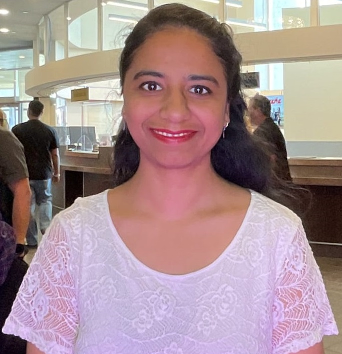

BALJINDER KAUR
Web Developer & AI/ML Enthusiast

Summary:
I am deeply passionate about learning, driven by love for staying ahead in technology and a commitment to constant improvement.
I eagerly explore new skills and concepts, seeing each challenge as a chance for personal and professional growth.
Education:
- PG Certificate in AI & Data Analytics
- Masters in Computer Applications
Work Experience:
I have 7 years of work experience as Web Developer.
Skills:
- HTML:⭐⭐⭐⭐⭐
- CSS:⭐⭐⭐⭐⭐
- JavaScript:⭐⭐⭐⭐⭐
- Python:⭐⭐⭐⭐⭐
- MySQL:⭐⭐⭐⭐⭐
- MongoDB:⭐⭐⭐⭐⭐
- Power BI:⭐⭐⭐⭐⭐
Others
Hobbies
Contact